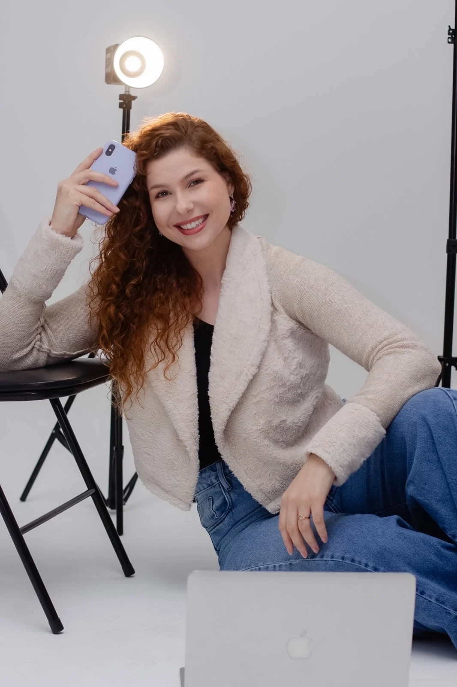
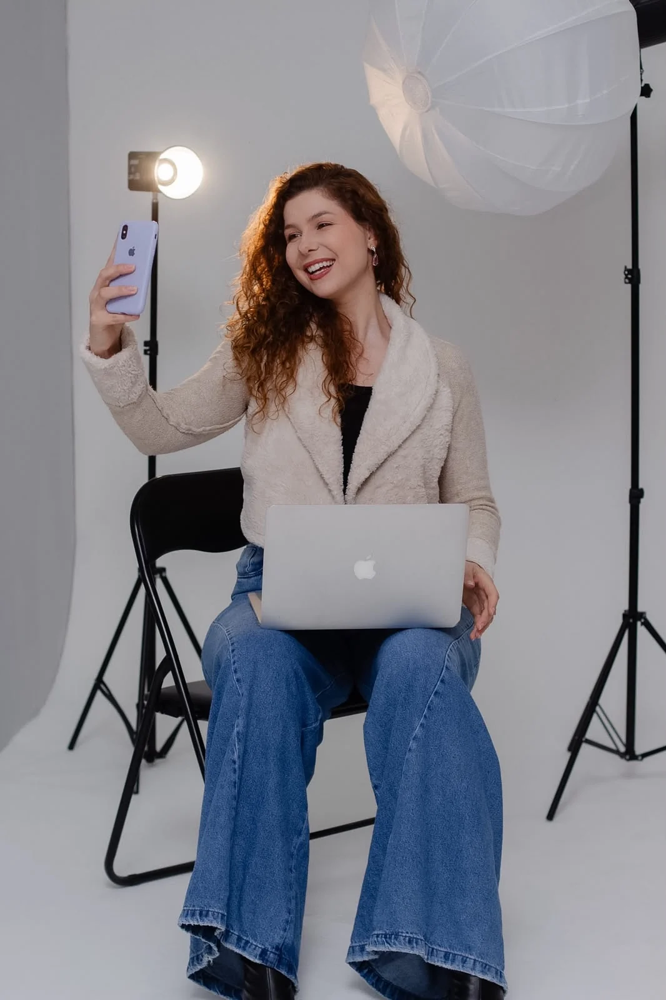
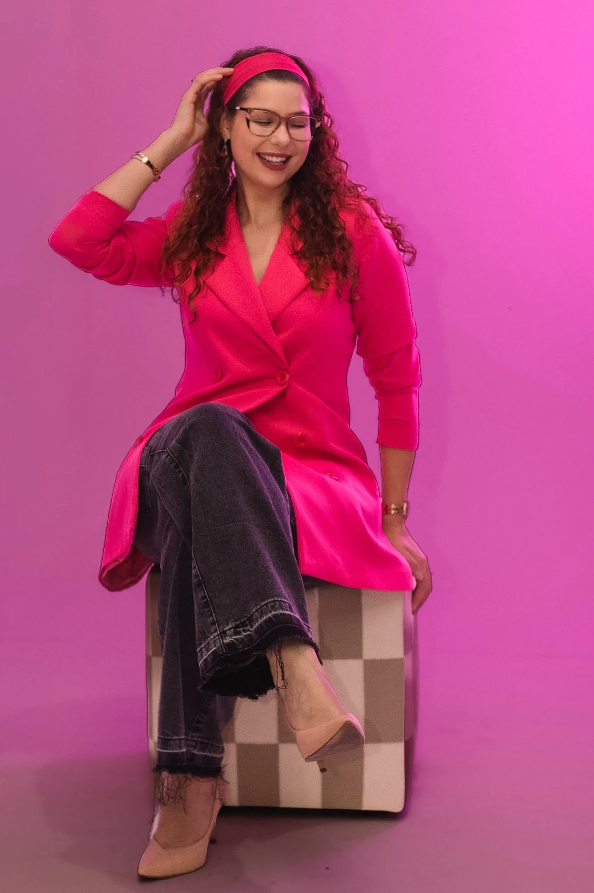
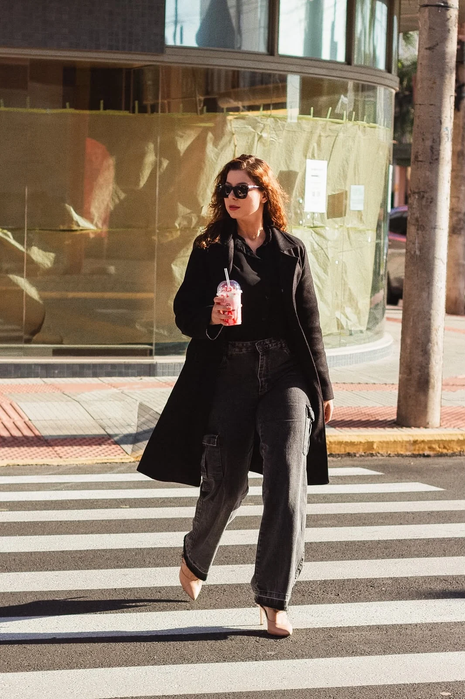
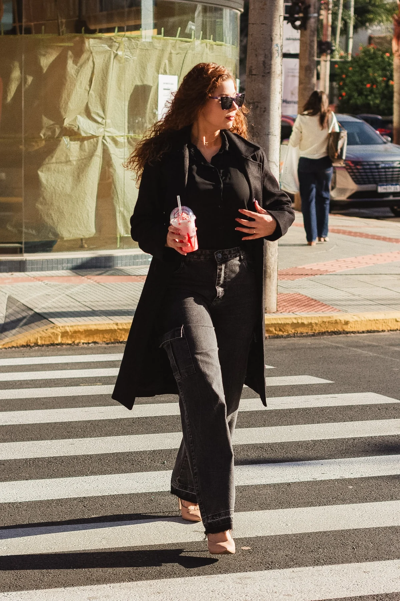
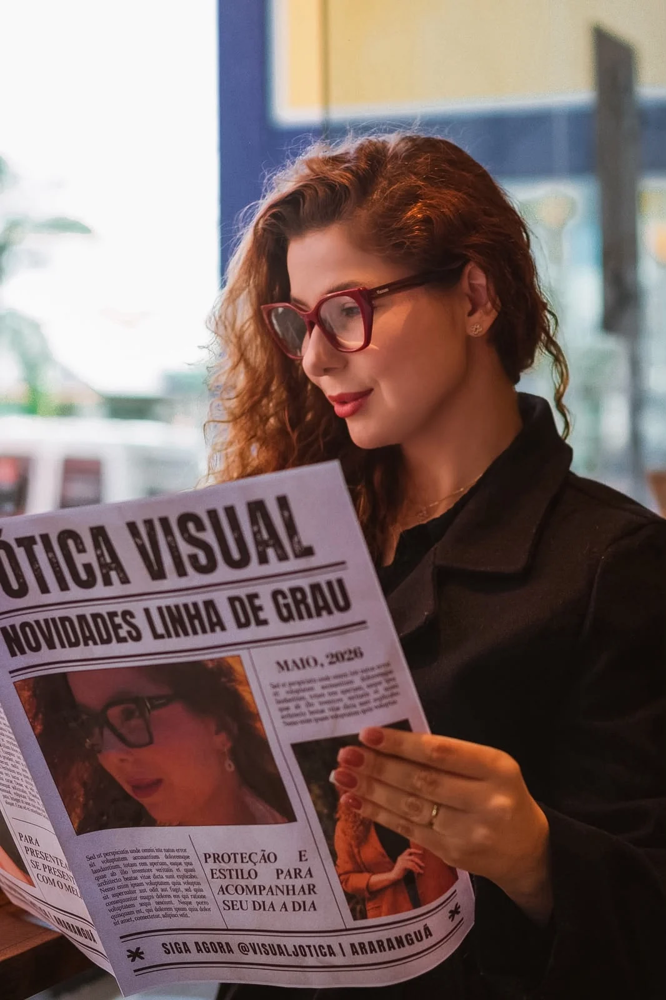
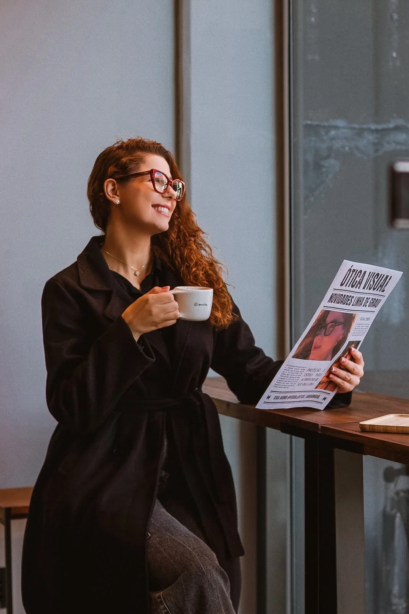
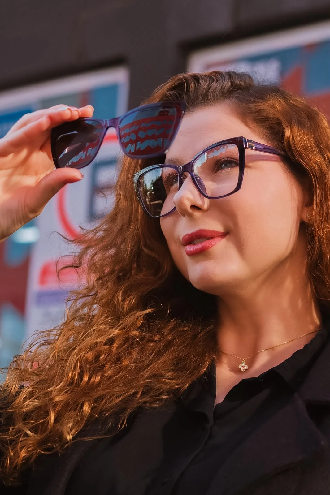

Visual Ótica JoalheriaConteúdo de marca
Criadora de Conteúdo • Modelo Comercial • UGC • Presença Digital
Tainara Demarch
Leve, espontâneo e criativo. Comunicação que aproxima.
Uno experiência em campanhas e moda à criação de conteúdo pensado para redes sociais, anúncios e marcas. Produzo vídeos e fotos que apresentam produtos com naturalidade, estética e presença diante da câmera.
ModaBelezaCuidados com o cabeloJoias e acessóriosÓculosEstilo de vida
Araranguá, SC • Disponível para projetos e viagens em todo o Brasil

Tainara DemarchCriadora de conteúdo • Modelo comercial • UGC
Instagram128,6 milvisualizações nos últimos 30 dias
Instagram6.187seguidores
Stories101 milvisualizações nos últimos 30 dias
Audiência96%localizada no Brasil

Uma atuação que se complementa
Naturalidade para criar. Presença para representar.
Minha trajetória une dois lados que trabalham juntos: experiência como modelo comercial e criação de conteúdo para marcas. Anos diante das câmeras me deram desenvoltura, leitura de imagem e facilidade para interpretar diferentes propostas.
Já participei de campanhas comerciais, editoriais, catálogos de moda e produções sazonais, inclusive para lojas de roupas no atacado. Hoje levo essa experiência para vídeos e fotos pensados para o ambiente digital, unindo roteiro, captação, edição e uma comunicação próxima.
Modelo comercialCampanhas, moda, editoriais, catálogos e fotografia comercial.
Criadora de conteúdoProdução para redes sociais, produto, campanhas e comunicação de marca.
Experiência de câmeraTrajetória como modelo e título de Miss Lauro Müller - SC como parte da formação de presença e desenvoltura.
Vídeo de apresentação
Uma visão rápida do que entrego diante das câmeras.
Produto, fala direta, joias, beleza, rotina e interação em diferentes contextos. A proposta é mostrar versatilidade sem perder a mesma assinatura: presença visual, naturalidade e clareza de comunicação.
1
Experiência comercialConteúdo para marcas e participação em campanhas.
2
Produção completaConceito, roteiro, captação e edição.
3
Audiência própriaPresença digital que complementa a entrega quando a publicação no perfil fizer parte do projeto.
Portfólio em vídeo
Conteúdo que coloca o produto dentro da cena.
Uma seleção de trabalhos que mostra fala, produto, beleza, acessórios, gastronomia e situações reais. Cada formato pode ser adaptado ao objetivo e à linguagem da marca.
Modelo comercial e campanhas
Experiência que começou antes do conteúdo digital.
Atuação profissional em campanhas comerciais, moda, editoriais, catálogos e produções para varejo e atacado. Essa bagagem amplia minha capacidade de receber direção, sustentar diferentes propostas e valorizar produto, roupa e imagem de marca.
Campanhas sazonaisInverno, verão, primavera e outono.
Moda e varejoProduções para lojas de roupas, inclusive operações de atacado.
FormatosCampanha, editorial, catálogo de moda, fotografia e vídeo comercial.
Vuk JeansCharlottVisual Ótica Joalheria






Parceria recorrente
Visual Ótica Joalheria
Produção recorrente de conteúdo para a marca, com participação aproximadamente mensal em gravações relacionadas a óculos, joias e acessórios.
A continuidade das produções permite trabalhar diferentes produtos e linguagens ao longo do tempo, mantendo familiaridade com a identidade da marca e consistência diante da câmera.
Produção recorrente • aproximadamente mensal
Presença digital
Audiência própria como ativo complementar.
A criação de UGC não depende do tamanho da audiência. Quando a estratégia envolve publicação nos meus perfis, os dados abaixo ajudam a mostrar quem acompanha o conteúdo e como os canais vêm evoluindo.
6.187seguidores
128.650visualizações • últimos 30 dias
3.850interações • últimos 30 dias
512visitas ao perfil • últimos 30 dias
Stories101 mil visualizações • últimos 30 dias
Reels17 mil visualizações • últimos 30 dias
Posts10 mil visualizações • últimos 30 dias
Ver distribuição etária completa
13-170,6%
18-245,8%
25-3435,7%
35-4434,1%
45-5415,9%
55-645,9%
65+1,9%
TikTok em crescimento
Perfil recente, com aproximadamente um mês de atividade, apresentado pelo ritmo de crescimento e familiaridade com conteúdo vertical.
555 seguidores atuais
perfil recente3.741visualizações • últimos 7 dias
+287seguidores líquidos • últimos 7 dias
634curtidas • últimos 7 dias
1 mêsaproximadamente de atividade
Perfil habilitado para TikTok Shop
Os dados representam períodos recentes e podem mudar conforme a evolução dos perfis.
Portfólio fotográfico
Moda, produto, beleza e presença de câmera.
Uma seleção enxuta abre a galeria. O restante do acervo continua disponível para mostrar variedade sem transformar a primeira leitura em uma avalanche de fotos.
Serviços
Da criação à presença em campanha.
Formatos para marcas que precisam de conteúdo digital, imagem comercial ou uma profissional que consiga unir os dois.
01 / CONTEÚDO
UGC e redes sociais
- Demonstração e avaliação de produto
- Fala direta à câmera
- Abertura de produto e tutorial
- Narrativa, rotina e locução
- Reels, TikTok e conteúdo para TikTok Shop
02 / CAMPANHAS
Modelo comercial
- Campanhas publicitárias
- Moda e campanhas sazonais
- Catálogos de moda e editoriais
- Fotografia comercial
- Vídeo comercial e demonstração de produto
03 / CRIAÇÃO
Produção criativa
- Conceito e roteiro
- Captação de foto e vídeo
- Edição e legendas
- Conteúdo orgânico
- Conteúdo para anúncios e campanhas digitais
04 / PRESENÇA DIGITAL
Publicação nos perfis
- Projetos com publicação no Instagram, quando aplicável
- Projetos com publicação no TikTok, quando aplicável
- Integração entre conteúdo da marca e audiência própria
- Formatos comerciais definidos conforme briefing
Direitos de uso, mídia paga, exclusividade, prazo de entrega e revisões são alinhados conforme o escopo de cada projeto. Não há tabela fixa publicada no portfólio.
Processo
Da ideia à entrega.
Um fluxo direto para transformar o objetivo da marca em conteúdo ou campanha com direção, clareza e acabamento.
Entendimento
Briefing, objetivo, público, referências e contexto da marca.
Planejamento
Abordagem, roteiro, cenas e linguagem adequados ao projeto.
Execução
Gravação, fotografia, direção de cena e edição quando fizer parte da entrega.
Finalização
Material final conforme formatos, prazo e condições acordadas em proposta.
Marcas, agências e campanhas
Vamos transformar uma boa ideia em conteúdo que faça sentido para a sua marca?
Produção de conteúdo, UGC, fotografia, modelo comercial e campanhas. Base em Araranguá, Santa Catarina, com disponibilidade para projetos e viagens em todo o Brasil.